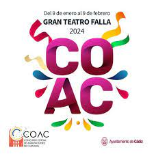

El Concurso oficial de agrupaciones carnavalescas de Cádiz (COAC) se celebra en el Gran Teatro Falla durante un mes, teniendo su final el viernes previo al miércoles de Ceniza, después de diferentes fases clasificatorias. En este concurso toma parte gran número de agrupaciones de toda la geografía andaluza e incluso en los últimos años de otras localidades no andaluzas como Ceuta, Mérida o Herencia (Ciudad Real), Barcelona, Burgos o Santoña (Cantabria) e incluso de fuera de España, como es el caso de una comparsa de Uruguay, en 2020. Éstas agrupaciones participan en diferentes modalidades: coros, comparsas, chirigotas y cuartetos.
El concurso suele terminar el viernes previo al miércoles de ceniza
El primer concurso oficial se celebró en el año 1865
EL concurso suele durar un mes aproximadamente
El organizador es el Patronato del Concurso Oficial de Agrupaciones Carnavalescas y Fiestas del Carnaval de Cádiz.
Esta es la primera fase del concurso, también conocida como Preliminares
Es en la única en la que pueden concursar todas las Agrupaciones inscritas y de acuerdo con el orden establecido en un sorteo que se realiza previamente. El orden en que se cantarán las coplas es, en el caso de Chirigotas, Comparsas y Coros, Presentación, dos Tangos/Pasdobles, dos Cuplés con Estribillo y Popurrí, y una Parodia libre y dos Cuplés con Estribillo como mínimo, en el caso de los Tríos, Cuartetos y Quintetos.
Esta es la segunda fase del concurso y en ella sólo podrán participar un máximo de 56 Agrupaciones que hayan superado las puntuaciones mínimas establecidas por el jurado en la fase de Clasificatorias.
El repertorio a interpretar debe ser inédito, a excepción de la Presentación, los Estribillos y el Popurrí y otras composiciones en el caso de los Tríos, Cuartetos y Quintetos.
Es a partir de esta fase cuando empiezan a sumar los puntos para aquellas Agrupaciones clasificadas para siguientes fases.
Esta es la tercera fase del concurso y en ella sólo podrán participar un máximo de 32 Agrupaciones que hayan superado las puntuaciones mínimas establecidas por el jurado en la fase de Cuartos de Final.
En esta fase se siguen las mismas normas de originalidad que en la anterior.
Esta es la última fase de concurso y en ella participarán aquellas Agrupaciones que alcancen en la puntuación mínima establecida por el jurado en la fase de Semifinal, con un máximo de cuatro Agrupaciones por modalidad.
Las agrupaciones ganadoras en la final ganarán el antifaz de oro.